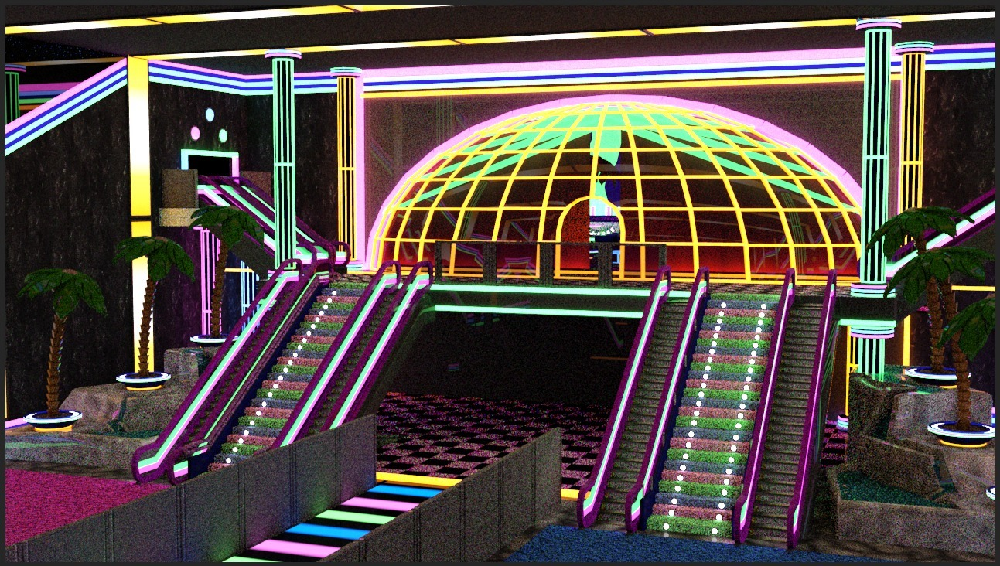
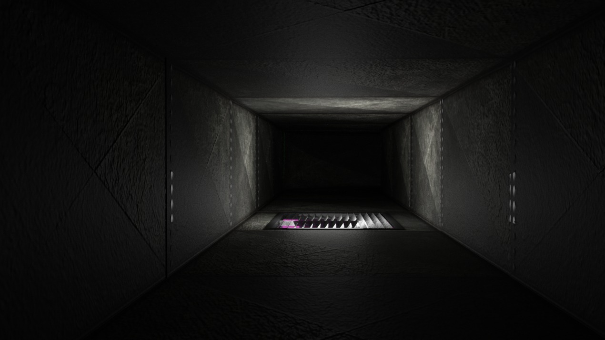
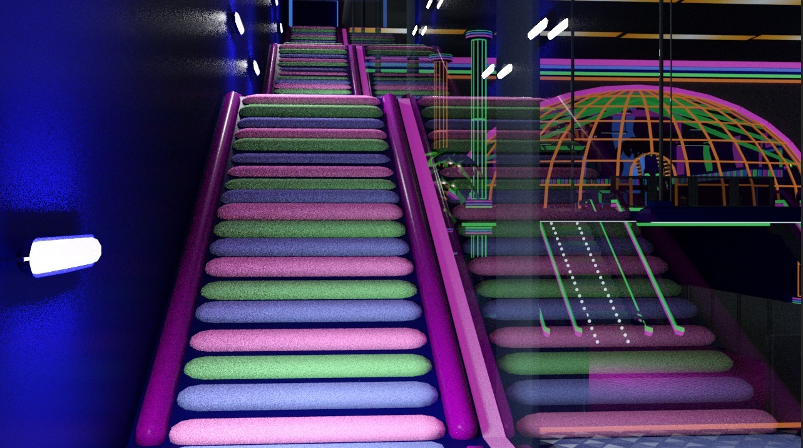

El nuevo juego de terror indie que mezcla géneros de formas inimaginables.
The Joy of a Plaything es un juego de aventura con toques de terror y RPG en primera persona que toca temas profundos como lo es la salud mental, el amor e incluso la depresión.
La idea principal de la trama es que un chico se esconde en su imaginación para evadir el mundo real que para él es muy cruel, principalmente por una serie de muertes de seres queridos y otros traumas como lo es sufrir de bullying; La situación del chico empeora tras enamorarse de una chica, ya que empieza a idealizar imaginando una serie de aventuras con ella (Lo que vive el jugador durante el juego) cuando la realidad es que esta chica en cuestión prácticamente no sabe de su existencia. Los personajes con los que nos topamos a lo largo del juego son personificaciones de emociones, traumas, miedos, recuerdos… del chico (El cual es el protagonista y quien es controlado por el jugador).
El jugador deberá decidir entre seguir el camino de la fantasía y seguir evadiendo la dura realidad o por el contrario enfrentarse a ella y eliminar pensamientos intrusivos.
Diseño:
Los puntos fuertes de esta entrega son tanto la historia o lore como la parte artística y creativa involucrada en los escenarios y personaje; El estilo visual está basado en la época de los años 80, el estilo retro: habitaciones llenas de luces de neón, palmeras y superficies reflectantes por doquier; Este juego tendrá piezas musicales: Canciones interpretadas por los personajes principales de cada capítulo.Mecánicas:
El juego transcurre en un entorno 3D en 1º persona y en el que únicamente vemos las manos del protagonista. A excepción de ciertas partes del gameplay en donde jugamos en 3º persona y con cámara lateral.El jugador contará con un ítem especial con el que podrá conseguir hologramas, estos podrán ser materializados en ciertas máquinas repartidas por todo el mapa.
El juego contará con mecánicas de sigilo, puzles, toma de decisiones, quick time events y boss fights.
Música:
La música de esta entrega está basada en el concepto musical leitmotiv: El OST se adapta a la ambientación específica de cada capítulo y acto.La banda sonora se adapta tanto a los escenarios y situaciones como a los personajes. Cada uno tendrá su propia melodía asociada así como su propio instrumento musical.
¡Conoce a tus nuevos amigos!:
Protagonista:
Un personaje con varios traumas de la infancia que se enfrenta a su pasado mezclando sus miedos e inseguridades con los recuerdos de seres queridos y momentos felices dentro de un mundo ficticio e imaginario en su cabeza.A lo largo de esta aventura tendrás a dos compañeras de viaje que te acompañarán.
Anyela:
Una joven aventurera que no le teme a nada, un alma poderosa y valiente cuando le toca enfrentarse a sus enemigos. Anyela en el fondo es un personaje cariñoso, dulce, amoroso…

Ravie
Una conejita robot niña que te acompañará en tu aventura pase lo que pase, es una niña miedosa y algo torpe pero a pesar de ellos es un personaje muy cariñoso y dulce.¿A qué te enfrentarás?
Empty endos:
En el juego te enfrentarás a varios robots poseídos por el villano: Reality Keeper, este es un ser muy poderoso que vive en las entrañas de Anyela.En este jugeo te enfrentarás a varios personajes hostiles que representan traumas, miedos o fobias.
Dreamy
Un gato robot gigante con muchas ganas de jugar; Quizá no sea buena idea dejar que juegue contigo.

Sr Buzz
Un insecto robot que representa la endomofobia. Lidera una ciudad completa de insectos.
Taylor
Un maniquí de cara giratoria y cambiante que actúa como el ser más amable y bondadoso del mundo frente al público, pero no se te ocurra anteponerse a sus deseosConcept art: Personajes y escenarios
  Inspiración y orígenes
Este título está inspirado en una colección de juegos indies populares (Muchos de ellos de terror) como lo son Five Nights at Freddy 's, Undertale, Poppy Playtime, Dark Deception…El juego está dedicado principalmente a aquellos jugadores que aman sentir tensión mientras disfrutan de una historia profunda y llena de giros argumentales; El propósito de su creación es el de dar una experiencia nueva y emocionante y que el transcurso de la historia pueda ayudar a reflexionar a los jugadores sobre ciertos temas tratados al ser abordados desde un nuevo punto de vista; Por tanto este título no pretende contentar a todo tipo de jugadores, sino centrarse únicamente en los fanáticos de juegos de terror y ciencia ficción o a fans de juegos que hagan reflexionar; Especialmente se pretende hacer que el jugador le tenga mucho cariño al personaje de Anyela hasta el punto de que algunos puedan tenerla como su “cruch no real” para al final destrozarles cuando este personaje revela ser un monstruo que busca el genocidio de todo el centro comercial para ser el único personaje en la mente del chico. (Representa la obsesión del chico).
¿Dónde jugarlo?
El videojuego en cuestión será lanzado tanto en consolas como la PlayStation como en ordenadores a través de la plataforma de Steam; El juego además contará con un port para Realidad Virtual (VR) desde cualquier dispositivo compatible con esta tecnología (Oculus, PlayStation VR… ).Objetivos:
- 10.000€ ===> Publicamos el videojuego
- 20.000€ ===> Implementación de nuevos personajes y escenarios.
- 40.000€ ===> Nuevas mecánicas o minijuegos a lo largo de la historia.
- 60.000€ ===> Nuevo personaje jugable.
- 85.000€ ===> Voces conocidas(actores de doblaje famosos) para varios personajes.
- 120.000€ ===> Doblado al inglés con voces profesionales.
TRABAJO EN EQUIPO
Esta práctica se llevó a cabo con el trabajo en equipo entre:- ALONSO CANCELA ALMENDRO: ANIMADOR(Ayudó con el diseño del boceto de la web e ideó los objetivos y las ofertas, además de solucionar el problema de las scrollbar).
- JINGWEN HU: ARTISTA DE CONCEPTO(Se encargó de la planificación y diseño de la fuente en físico, además de idear el poner de texto en el apartado de contenido).
- ASIER MARTÍN CABALLERO: PROGRAMADOR(Se encargó de digitalizar y generar la fuente, dio cuerpo a la página e implementó la fuente previamente creada, además de encargarse del código, implementando las ideas que sugerían los compañeros junto al diseño del boceto de la página).
- SERGIO MIGUEL ROLDÁN: DISEÑADOR DE NIVELES(Ayudó con la creación del código, además de apoyar en dar cuerpo a la propia página.).
- OMAR SIBAI RIFAI: GUIONISTA(Aportó ideas sobre la fuente, el lore del juego, diseñó las imágenes de los fondos de la web, supervisó el desarrollo del código e hizo la música y el vídeo promocional del juego).
Preguntas Frecuentes
¿Entre qué edades es adaptable el juego?
El juego es adaptable para niños y adolescentes de +8, y se recomienda tener edades de +12 para poder jugar sin ser acompañado. Se pide al jugador tener una edad mayor a 12 años porque se necesita un mínimo de conocimiento para poder entender la historia e idea del juego, sino baja mucho la experiencia del juego, porque se ha dado más importancía al diseño de la drama que a la mecánica. Pero es simplemente una surgerencia, los niños con edades menores también pueden jugar al juego, pero tienen que estar acompañados por adultos.
¿En qué idiomas puede ofrecer ofrecer el juego?
Principalmente, el juego se realizará en Inglés. Pero, más adelante si en el futuro el juego llega a recibir mucho apoyo，se planificará sacar más idiomas para que más jugadores puedan disfrutar del producto.
¿El juego se trata de algún mundo real o es ficticio?
Alterna entre el mundo real y la imaginaria porque el personaje tiene problemas con la salud mental a causa de varios sucesos.
Deja tu comentario
Comentarios publicados
Early access e imágenes exclusivas de los diseños.
Entrega una semana antes del lanzamiento del juego.
ESPERANZA + demo privada, arte digital del juego, acceso al discord donde también está parte del equipo de desarrollo y tu nombre en los créditos.
Entrega 10 días previos a la salida del videojuego.
FELICIDAD + tu nombre en los créditos resaltado, acceso a todas las bandas sonoras y guiño con tu nombre implementado sutilmente dentro de juego.
Entrega 10 días previos a la salida del videojuego.
OBSESIÓN + varios cosméticos exclusivos y descuentos exclusivos en el merchandising.
Entrega 15 días previos a la salida del videojuego.